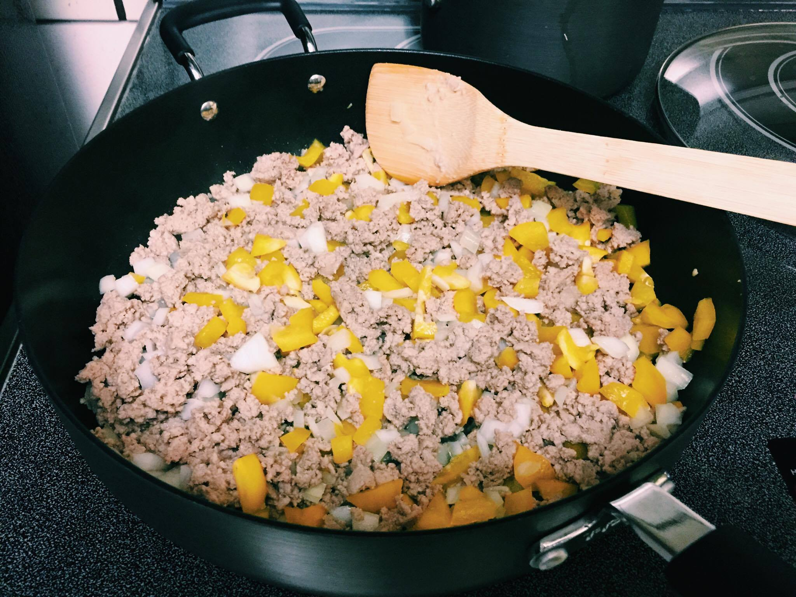

Chubsy's Kitchen
Sweet Potato Hash with Ground Turkey
My friend wanted to make something with ground turkey one day, so as per usual I went on Pinterest to see any easy recipes to make. The first picture that displayed was this sweet potato hash that was mixed in with ground turkey, and it looked so delicious that I had to make it for myself too! After work, I drove straight to Trader Joe's and picked up some fresh ingredients: sweet onions, bell peppers, sweet poatoes, and cheese.


I chopped up the vegetables to diced pieces.


After the hash is finished, I took the pan off the stove and sprinkled mozzarella on top! I love cheese so I topped my hash with a load of cheese!